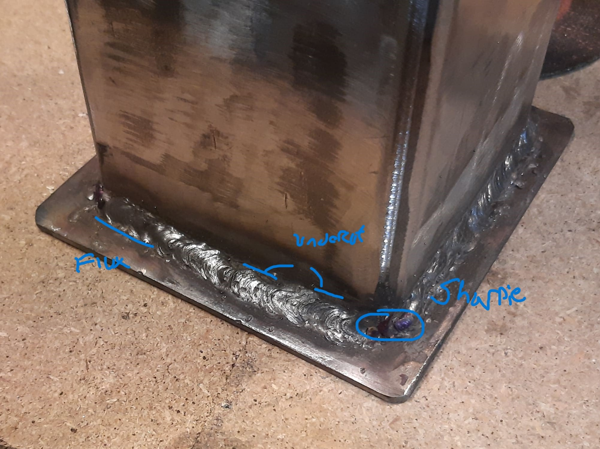
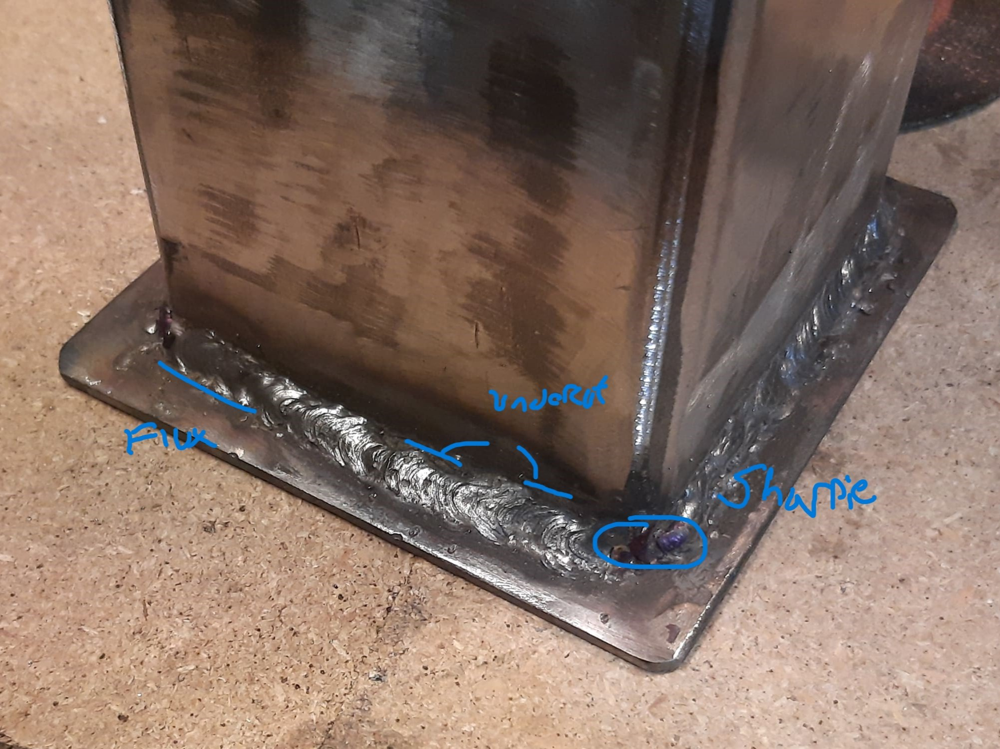

Welding Projects with a 110V Machine
Problem
Welding always seemed like such a cool processs - and it is. Simultaneously, it always appeared to be a steep entry, but after discovering that there are a bunch of resources on YouTube to get into welding, more specifically, Stick/SMAW welding (Shielded Metal Arc Welding) I decided to go in and buy a small welder at the recommendation of this review and this video explaining how cheaply one could get all the basics you need for under $200. Since then, I weld when I get the chance to just outside the garage.
Approach
My progress with welding had gotten, well, stuck from attempt to attempt - it's not called stick welding for nothing and I keep a very close hand to the power switch so I can break off the electrode once it cools and try, try again. I started welding 3/8" plate into an angle bracket (and you can see that earlier attempt in the photos below), but more recently, I scored lines with a box cutter and square to follow with my welds, and I can definitely feel that my sense of amperage settings, travel speed, arc gap, and rod angle have improved since I first started. I would like to try out MIG or Flux Core next and continue to practice with stick.
One of the first "real" things I attempted to create was a small hand-sized woodfire rocket stove, but there were a few flaws in the design, not to mention - the welds. Altough the prototype was made to specification, the fuel bay was just not going to cut it without additional room to store the wood like a tray or added spout that is common. Additionally, the gaps to closed area did not lend themselves to the kind of air flow that would be characteristic of a rocket stove.
Therefore a few changes were made (imprompteau) from the existing design. but the revisions in situ, made positive impact to both the execution and the operation of the fire. By changing the order of the welds and spending additional time on surface prep (as well as buying higher grade flap disks and a better angle grinder) I was able to achieve comparatively much better welds.
 

Comparing the welds on the left and the right in the images below really help me see that I've made some strides since starting and still have some ways to go.